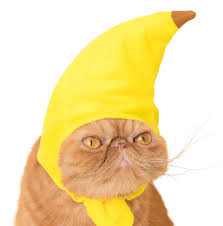

As obligate carnivores, cats have specific requirements for their dietary nutrients, namely nutrients found only in meat or synthesized, such as taurine and Vitamin A. This as Carrots are second only to sweet potatoes as an excellent source of beta carotene or vitamin A, cats will benefit from incorporating them in their diet but they also make cute props for photos
cats with carrots are superior!
Reasons why cats and carrots are the best partners
it is good for their diet
you can balance them on their head
they can bring out the fur colour in cats in a photoshoot
some other cats with fruits may be as superior such as the cat with a banana hat

or there can also be odd friendships with fruits
put your email here to get newsletter about cats
**Please note that some fruits are enemies to cats such as grapes, raisins, lemons, limes and oranges that can give them upset stomachs